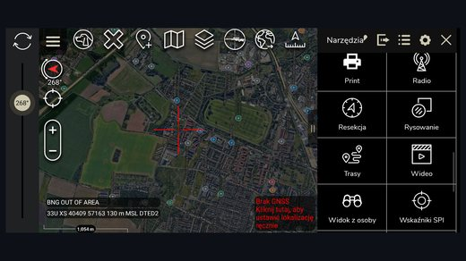
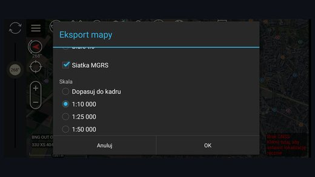
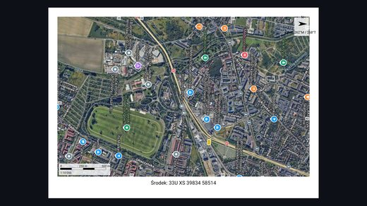

PrintPlugin
ATAK-CIV 5.8 plugin
Saves the current map view as A4 sheets in a PNG or PDF file. 300 dpi, optional MGRS grid, selectable scale.
Why it exists
Batteries run out, phones get wet, and some places do not allow electronics at all. A paper map has none of those problems.
The plugin prints exactly what is on screen: the base layer and the map objects in the current view. The ATAK interface is not included.
How to use it
1. Press the „Print” button on the ATAK toolbar.
2. Choose format, background, grid and scale.
3. Review the full-screen preview.
4. Press „Save” and pick a location.
Settings
| Option | Values | Default |
|---|---|---|
| Format | PNG, PDF | PNG |
| Background | map tiles, white | map tiles |
| MGRS grid | on, off | off |
| Scale | fit to view, 1:10,000, 1:25,000, 1:50,000, 1:100,000 | fit to view |
The sheet
The plugin renders an A4 sheet at 300 dpi with a 10 mm margin. The map area fills the whole printable area except the footer strip.
The map is never stretched. It keeps the aspect ratio of the extract and leaves the rest of the area white.
Screenshots


